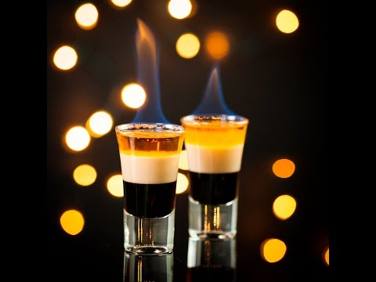
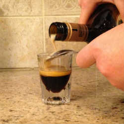

Captivating | Sweet | Smooth
The B52 combines liqueurs of coffee, irish cream and citrus into a dainty layered shot that captures your intrigue, tickles your taste buds, and has you coming back for another round. Fortunately, it is also lighter on alcohol than most other shots, so even a lightweight can indulge the desire for one more glass 😉
A typical B52 consists of equal parts coffee liqueur (Kahlúa or Tia Maria), irish cream (Bailey's), and orange liqueur (Grand Marnier).
The three liqueurs are poured into a shot-glass, in layers, resulting in the B52's signature colourful appearance. The bottom layer is the dark-brown of coffee liqueur; following is a creamy-white layer of irish cream. The final layer of orange liqueur, golden and translucent, ties the other other two contrasting layers into one harmonious picture. Music in a glass.
The top layer is sometimes flambéed for even more dazzling visuals.
The taste is equally layered. The shot, as a whole, can be broadly described as sweet, like caramel, but each layer brings a different dimension to that sweetness. The coffee gives a bold, full-bodied flavour; the irish cream makes the shot smooth and milky; the orange liqueur adds its citrus aroma and fruity tang.
Add Kahlúa into an empty shot glass and let it settle.
Slowly pour the irish cream, over the back of a spoon, into the shot glass such that the layers do not mix.
It helps if the spoon is cold.
Similarly, layer the Grand Marnier into the glass.
Optional: Add the rum to the top and set it on fire. If the Grand Marnier is warm, it can be set on fire instead, and the rum can be omitted.